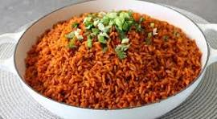

Jollof Rice Recipe

Recipe Description
This recipe is curated to teach you how to cook authentic Ghanaian jollof. That said
let's dig into actually getting some food cooked.
Ingredients
- 3 cups of long grain rice
- 4 large tomatoes
- 1/4 cup of tomato paste
- 1/2 cup of vegetable oil
- 2-3 peppers
- 1 teaspoon of curry powder
- Water
- 1 teaspoon salt (adjust to taste)
- 1 large onion (chopped)
Instructions on preparation
- Blend tomatoes with peppers unitl smooth.
- Rinse rice in water.
- Add oil to saucepan and heat.
- Add chopped onions and stir until color turns brown.
- Add tomato paste and cook.
- Add blended tomato and pepper mix. Add salt and curry powder and cook
for about 20 minutes.
- Add rice and water and allow to cook for about 30 minutes(Add a little more water if needed).
- Serve once rice is cooked.
Home page
Braised Rice Recipe
Ampesi Recipe